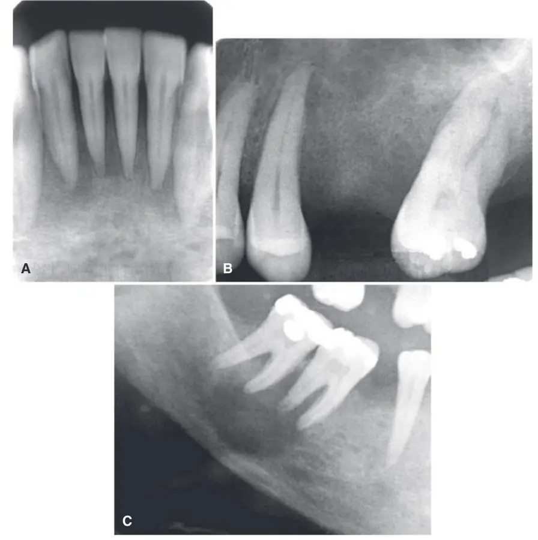
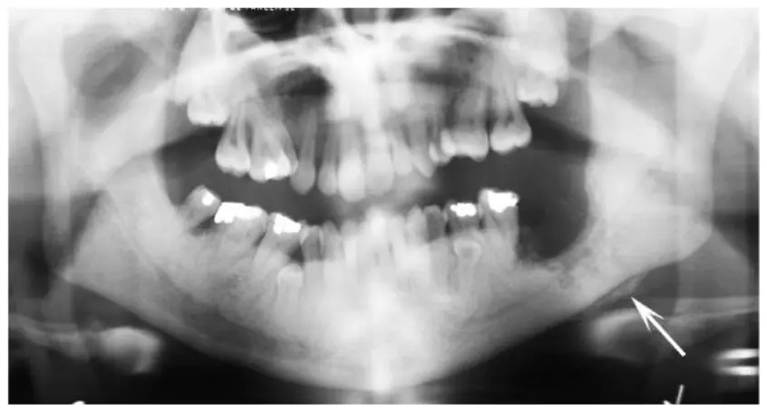

نسخه استخراجشده؛ ترجمه یا تأیید علمی انجام نشده است. وضعیت: captured
در هایپرپاراتیروئیدیسم، هورمون پاراتیروئید بیش از حد در گردش است و این «به نفع تحلیل استخوان توسط استئوکلاست عمل میکند تا کلسیم را از اسکلت بسیج کند».

و دو نوعش را از هم جدا کن، چون علتشان کاملاً متفاوت است:
و نخستین یافتهی تصویری — این را حفظ کن: «یکی از زودترین تظاهرات هایپرپاراتیروئیدیسم، از دست رفتن لامینا دورا در تصاویر داخلدهانی است، که در حدود ۱۰٪ بیماران رخ میدهد.» و پیامد بصریاش: از دست رفتن کنتراست میان دندان و استخوان، ریشه را باریکشوندهتر نشان میدهد.
و یک عدد که انتظارت را واقعبینانه میکند: «تنها حدود یک از هر پنج بیمار هایپرپاراتیروئیدیسم تغییرات استخوانی قابل مشاهده دارد.» یعنی تصویر طبیعی، بیماری را رد نمیکند.
و در فک چه میبینی؟ دمینرالیزاسیون و نازک شدن کورتکسها — شامل مرز تحتانی مندیبل، مرزهای کانال آلوئولار تحتانی، و مرزهای سینوس ماگزیلاری. ترابکولهای طبیعی جای خود را به ترابکولهای ریز و تصادفیجهت میدهند و الگوی «شیشهی مات» (ground-glass) میسازند. و در جمجمه، الگوی کلاسیک «نمک و فلفل» از دست رفتن جدول دیپلوئیک مرکزی میآید.
و یک نکتهی مهم دربارهی دندان: «چون PTH مواد معدنی را از اسکلت بسیج میکند، دندانهایی که از پیش کاملاً تشکیل شدهاند بدون تأثیر میمانند.» پس تغییرات دندانی تنها در تکامل رخ میدهد.
و تومور قهوهای: «تومورهای قهوهای هایپرپاراتیروئیدیسم، که ضایعات سلول ژانت مرکزی هستند، ممکن است در استخوان ظاهر شوند» و در استخوانهای صورت و فک شایعاند، بهویژه در بیماری دیرپا. نامشان از ظاهر قهوهای یا قرمز-قهوهای در معاینهی ماکروسکوپی میآید. و قاعدهی طلایی: «اگر ضایعهی سلول ژانت دیرتر از دههی دوم زندگی رخ دهد، بیمار باید از نظر افزایش کلسیم سرم، PTH و آلکالن فسفاتاز غربال شود.»
و زودترین و قابلاتکاترین یافتهی اسکلتی: «فرسایشهای ظریف استخوان از سطوح سابپریوستئال فالانژهای دست» — یعنی گاهی تصویر دست، تشخیص را زودتر از فک میدهد.
حالا سر دیگر طیف. استئوپتروزیس — که «بیماری استخوان مرمری» یا «آلبرس-شونبرگ» هم نامیده میشود — بیماری ارثیای است که تمایز و عملکرد استئوکلاستها را مختل میکند.

و پارادوکس مرکزی این بیماری را حتماً بفهم: «ناتوانی استخوان در ریمادلینگ طبیعی باعث میشود استخوانها بهشدت مینرالیزه، مستعد عفونت، و — شاید برخلاف انتظار — شکننده و مستعد شکستگی شوند.» استخوان متراکمتر، لزوماً قویتر نیست.
و دو شکل با دو سرنوشت کاملاً متفاوت:
و یک پیامد خونی که مستقیماً بر درمان دندانپزشکی اثر میگذارد: از دست رفتن فضاهای مغز استخوان میتواند تولید گلبول قرمز و سفید و پلاکت را مختل کند و به آنمی، لکوپنی و ترومبوسیتوپنی بینجامد — یعنی بیمار خسته، مستعد عفونت، و با زمان خونریزی طولانیتر.
و خطر اصلی برای ما: «افزایش دانسیتهی استخوان و عروقرسانی نسبتاً ضعیف به افزایش استعداد ابتلا به استئومیلیت میانجامد، معمولاً از ضایعات التهابی ادنتوژنیک. این مشکل در مندیبل شایعتر است.» پس: «ضروری است که بیماری التهابی ادنتوژنیک در این افراد پدید نیاید.» پیشگیری، درمان است.
روی تصویر: از دست دادن زودرس دندان، دندان غایب، ریشه و تاج بدشکل، دندانهای ضعیف کلسیفیه و مستعد پوسیدگی، و تأخیر رویش بهدلیل دانسیتهی بالای استخوان یا آنکیلوز. مرز طبیعی میان استخوان کورتیکال و اسفنجی از بین میرود، و در مندیبل کانال آلوئولار تحتانی بسیار برجسته به نظر میرسد.
و یک نشانهی تکنیکی جالب: «در تصویربرداری تخت، استخوان ممکن است کماکسپوز به نظر برسد، چون پرتو فرودی نمیتواند از آن عبور کند.» یعنی تصویری که به نظر میرسد خطای دستگاه است، میتواند خودِ تشخیص باشد.
و درمان: پیوند مغز استخوان برای تحریک تشکیل استئوکلاستهای کارآمد؛ عوارض خونی با استروئید سیستمیک؛ و استئومیلیت با آنتیبیوتیک و اکسیژن هایپرباریک.
نوع سؤال: ساخت کلمه · 4 خانه
حروف منبع: ه · ی · ل · ک